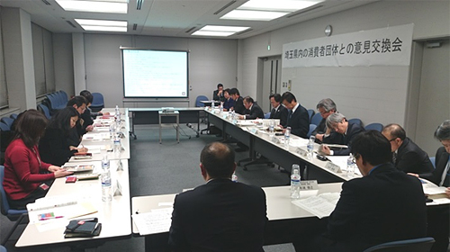

|
|
3月9日(月)15時30分より、さいたま新都心合同庁舎にて、今年度2回目となる、関東農政局と消費者団体との意見交換会が開催され、都市農業の現状や事例等について意見交換しました。 関東農政局から末松局長、小林局次長はじめ、消費・安全部、企画調整室、農村計画部より11人、消費者団体から埼玉消団連、埼玉県生協連、埼玉県生協ネットワーク協議会、さいたま市消団連の4団体7人が出席しました。  はじめに、末松関東農政局長より｢意見交換会は大切な場であると考えています。私たちは農業の視点で物事を見ています。消費者の目線で考えることも大切だと思っています。こうした場を大切にしていきたいと思っています｡｣と挨拶がありました。 続いて、関東農政局農村計画部農村振興課より｢都市農業の定義と現状について｣をテーマに、｢一般には、｢市街化区域農業とその周辺で営まれる農業｣です。推計値では全国の農地の2％、農家戸数は全国の約9％、販売額は全国の約9％にあたります。災害が発生した時には防災空間として役割を果たすなど、6つの役割を持っています。近年は植物工場の動きもあり、精密機器工場を植物工場に転換する例や、太陽光を利用した水耕栽培などをおこなっています｡｣等の報告をされました。 引き続き、農業生産法人株式会社(風)より｢都市農業事例｣として、｢農業を基幹産業として捉え、障害のある人もない人もともに働ける農業事業を実施し、農業によって障害をもつ人と若者が自立できる農業の実現を目指しています。所沢市では、野菜をつくる生産者と消費者との距離が近くて遠い現状があると感じ、今回の｢農ある暮らし｣事業を実施し、生産者と消費者の接点づくりを行いました。また、生産、農作物の直売を行うとともに、相互理解を深めるための農業体験イベントを実施しました｡｣等の報告をされました。 次に、関東農政局企画調整室より、｢大規模災害の対応と現状について｣報告されました。 続いて、｢堆肥の臭い・農薬散布など、近隣との関係｣「遊休農地の活用」等について意見交換がありました。 |